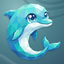
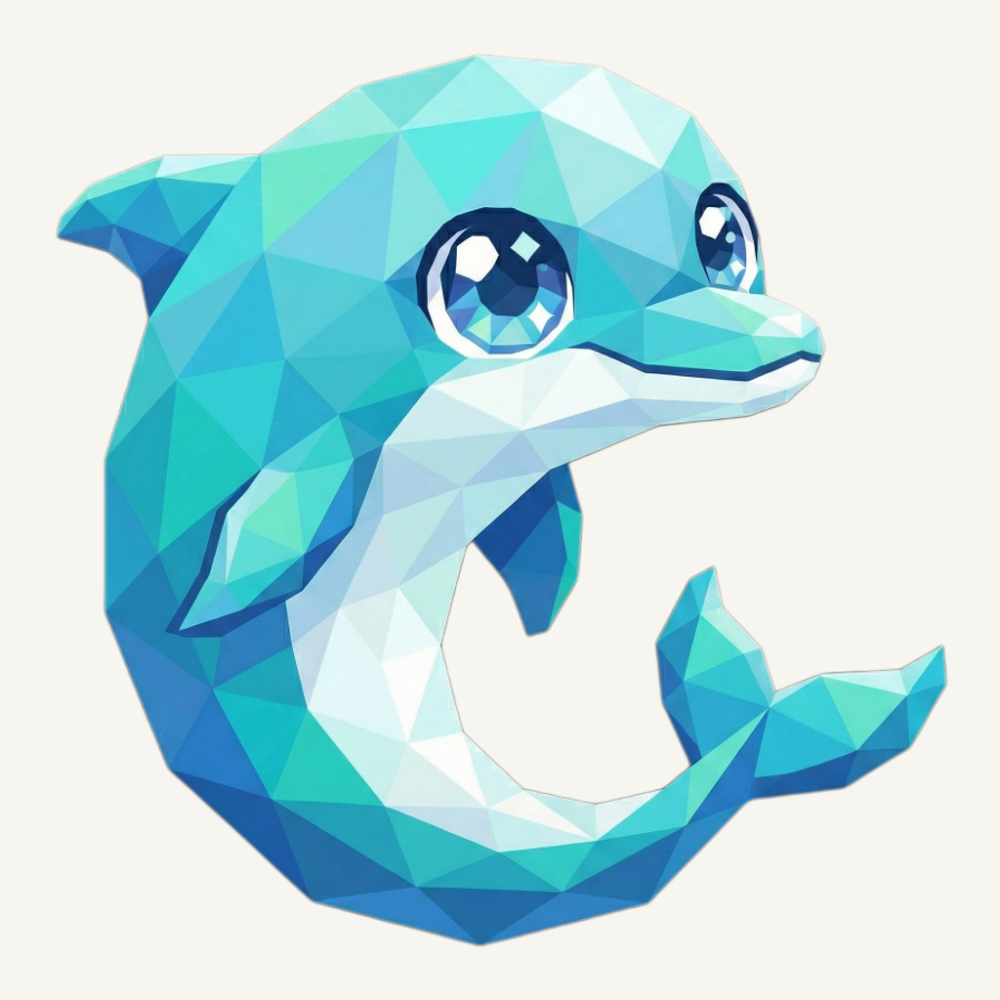
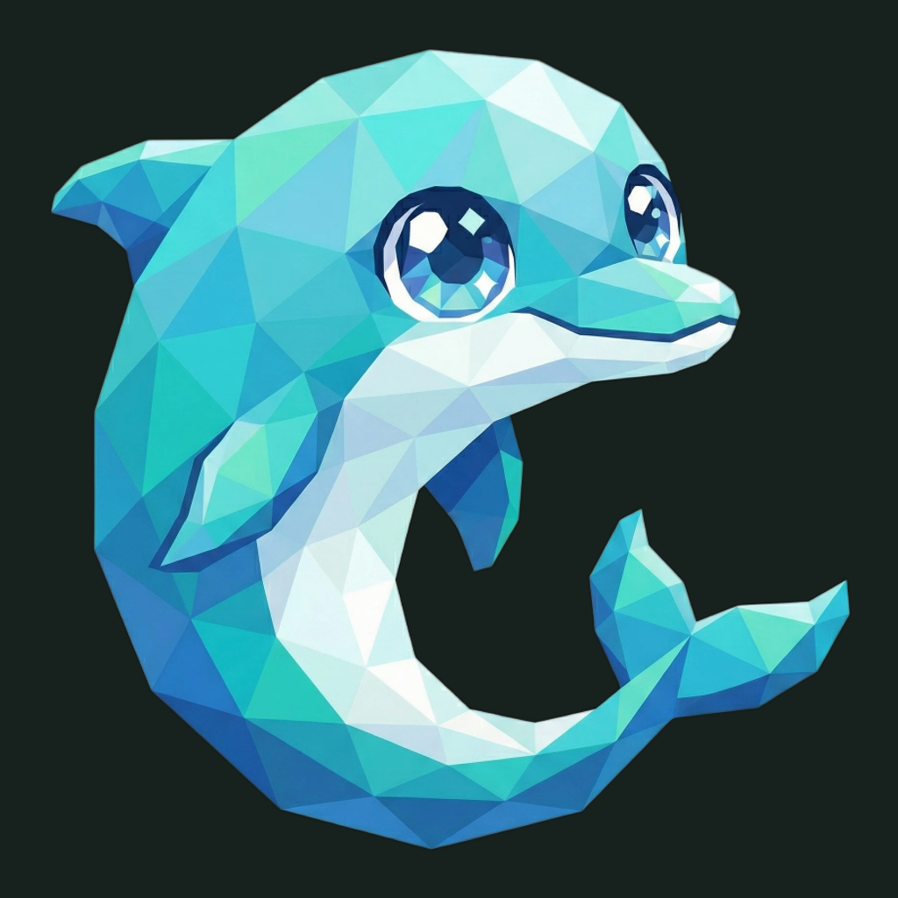

01 / Composition
The same playful turn
The dolphin, curled tail, camera, and original margins are retained exactly. Its complete silhouette stays inside the rounded tile; no crop or artificial extension was added.
Animal family · Refined presentation
The familiar dolphin, carried by a quiet teal current.
Original artwork retained · finishing 01
Native 920 × 920
01 / Composition
The dolphin, curled tail, camera, and original margins are retained exactly. Its complete silhouette stays inside the rounded tile; no crop or artificial extension was added.
02 / Drawing
Cyan, turquoise, blue, and pale belly planes remain the original transparent artwork. The bright eyes and sweeping tail keep their existing gesture; no new decoration or model generation was needed.
03 / Presentation
Oblique wave crests follow the empty upper-right field. A deep teal gradient, fine grain, and shallow contact shadows give the retained flat artwork a tactile setting.
Presentation tiles at 128/64 px; transparent artwork for small app and browser marks.

The curled blue silhouette and pale face stay recognizable at toolbar size. At 16 px, individual facets and eye highlights simplify; use the transparent foreground there. Native source: 920 px; 1024/2048 px exports are upscales.
A designed background, with colors sampled from the untouched original.
Select a swatch to copy its hex value. The R2Shot UI primary (#24C4BD) remains a separate product color.
One retained foreground, checked on two contrasting backgrounds.


Original artwork retained · zero generation calls · native 920 × 920
Loading brief…
The original animal was retained without a model request. These owner-provided boards guide the independently composed matte field, light, and shallow surface texture.


{kind=link}
{kind=link}
{kind=link}
{kind=link}
{kind=link}